Company introduction
Shenzhen Weddell Sport Co., Ltd. in 2021 entered into a strategic investment and partnership with a professional webbing manufacturer originally founded in 1994. Specializing in the development and production of webbing, ropes, belts, straps, and sporting goods accessories, our partner factory is ISO 9001 certified and operates from a 20,000㎡ industrial park in Shenzhen. Equipped with hundreds of advanced weaving machines, rope extrusion lines, and CNC sewing systems, it delivers an annual output of over 300 million meters. Our products comply with international standards including GRS (Global Recycled Standard), RoHS, EN71, OEKO-TEX® Standard 100, and REACH—ensuring safety, sustainability, and quality for global markets.
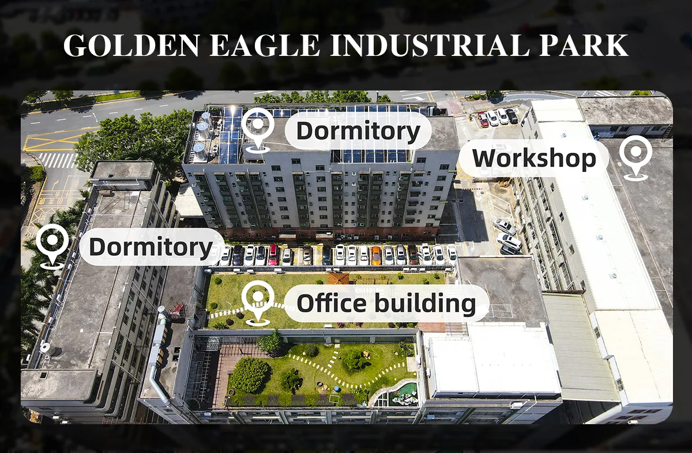
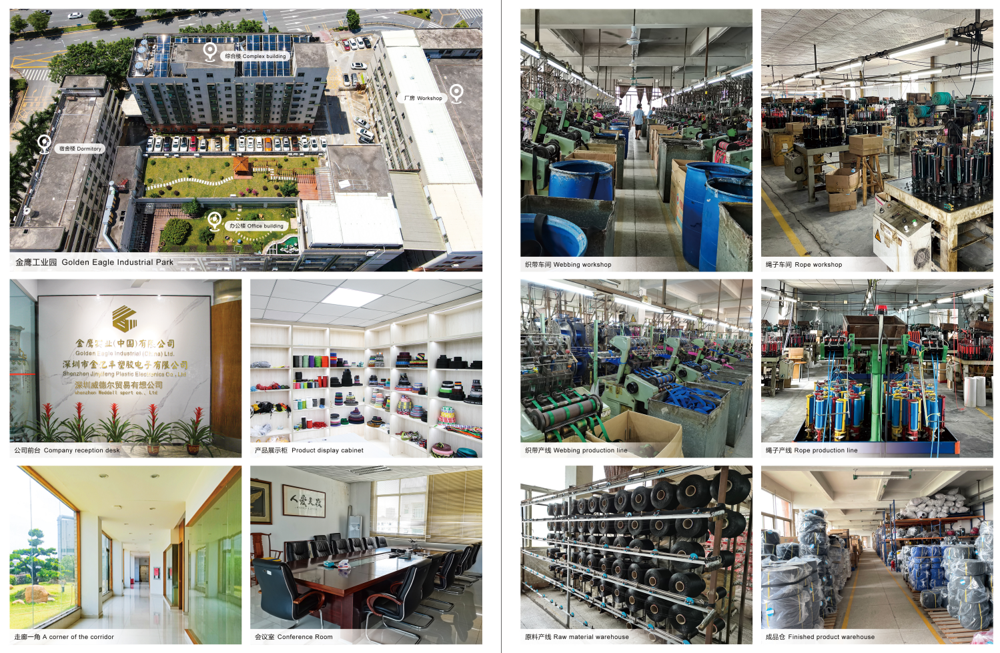
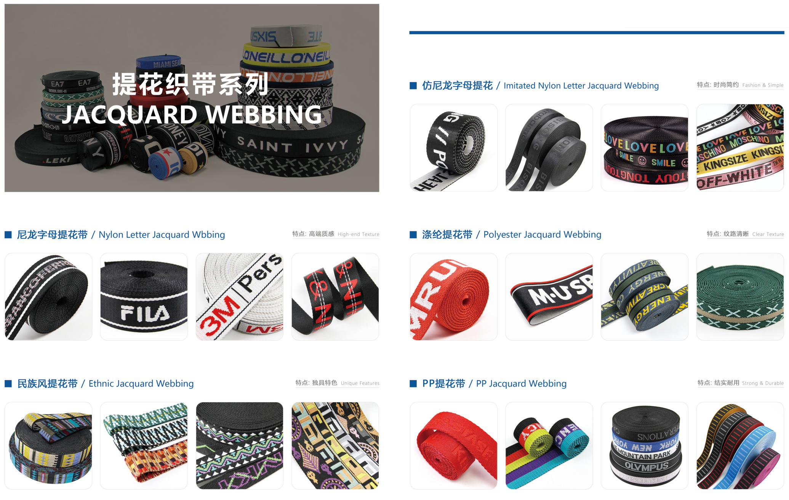
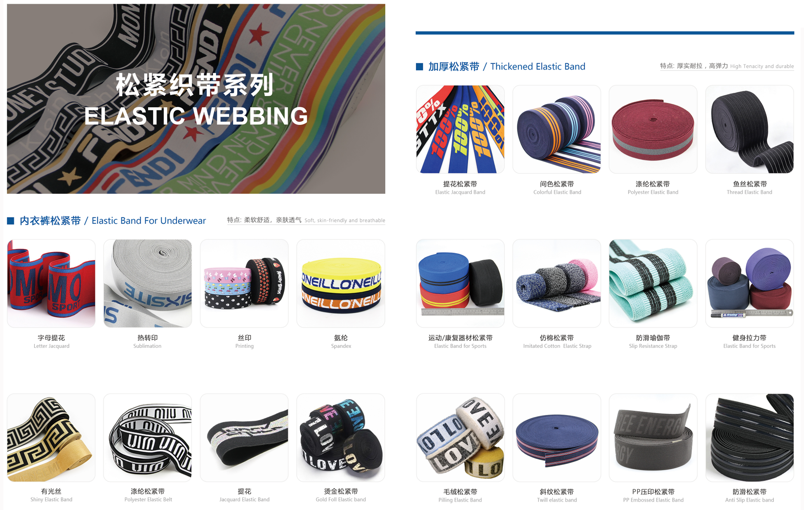
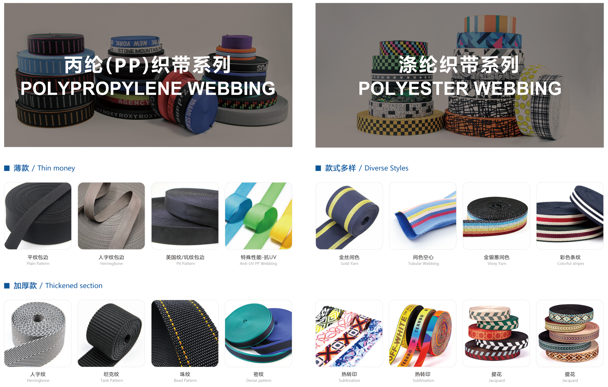
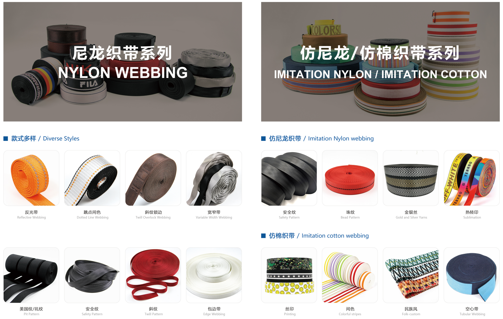
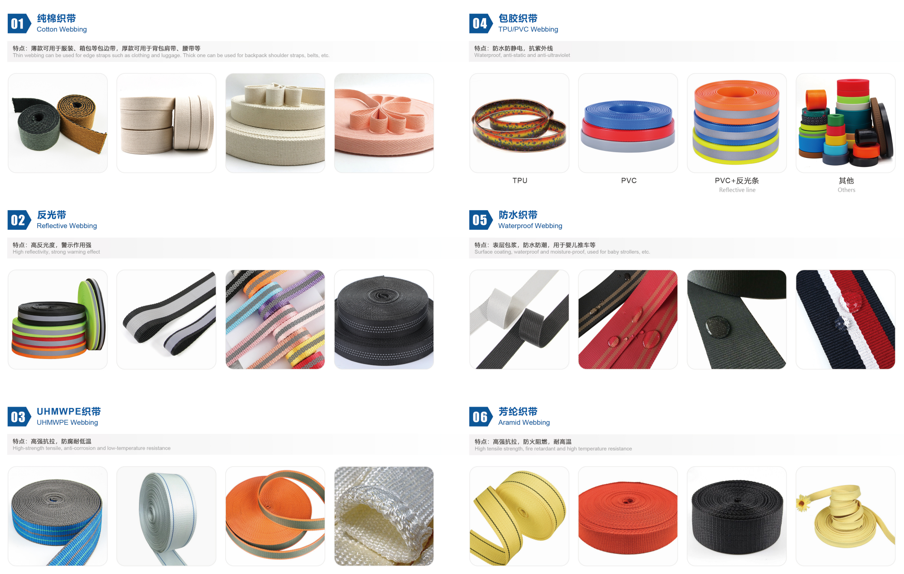
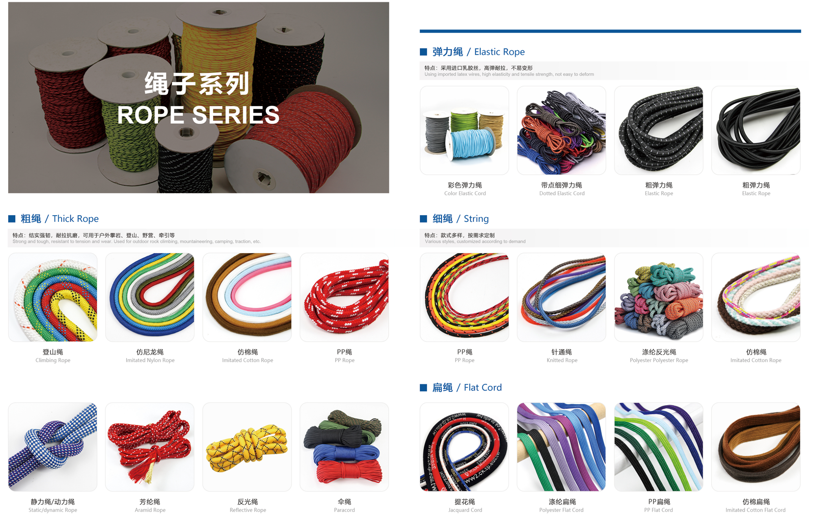
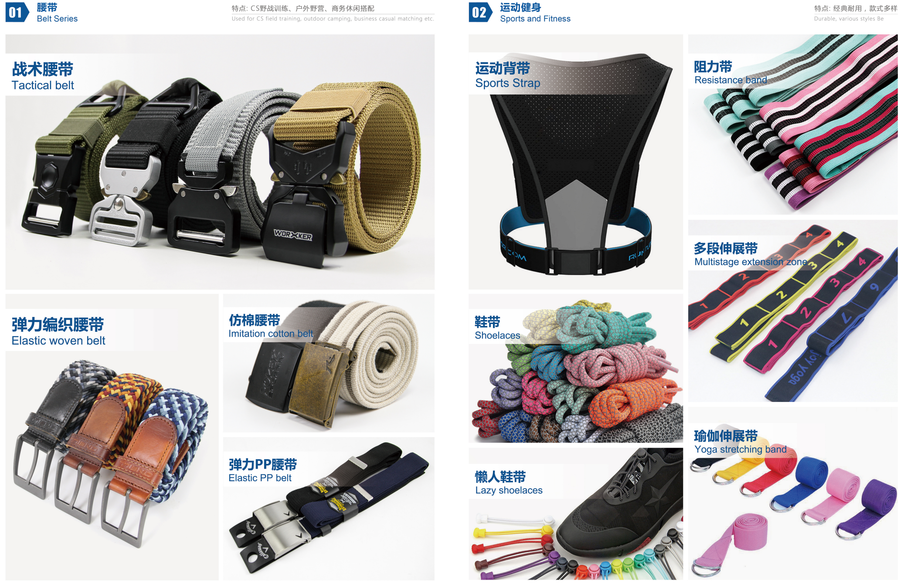
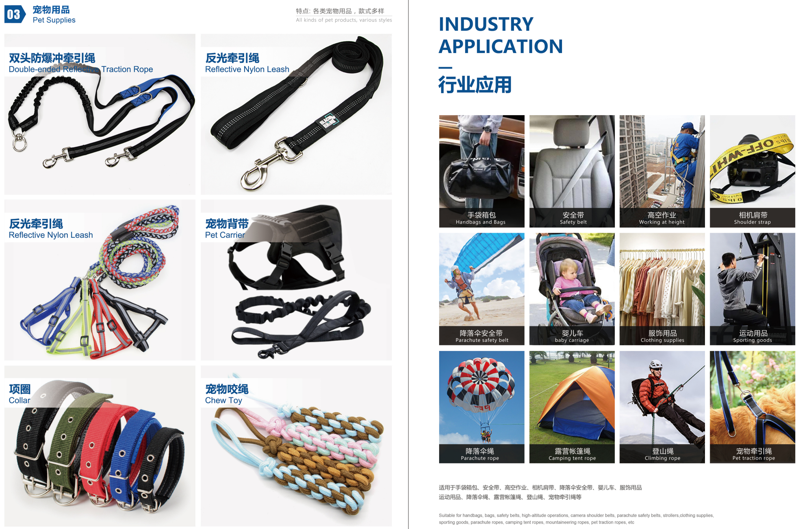
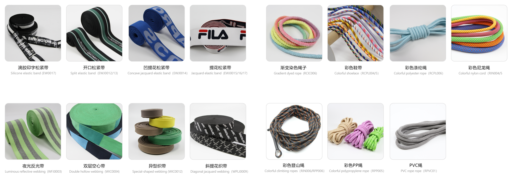
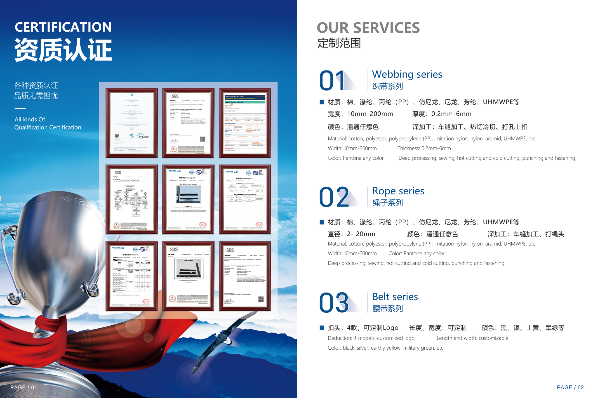
📞 Contact us
Shenzhen weddell sport products Co.,ltd
📧 Email：tony@weddellsport.com
📱 Phone/WhatsApp：+86 13560805598